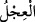
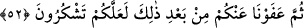

51. Mûsâ’ya kırk gece (vahyetmek üzere) söz vermiştik. Sonra haksızlık ederek
buzağıyı (tanrı) edindiniz.
Allah’ın Mûsâ’ya Tevrât’ı indirmeyi va’d etmesi, onun da bunu kabûl etmesi
“va’dleşme” olarak ifâde edilmiştir. Veya Allah ona, vahy sözü vermiş, o da Tûr’daki
buluşma yerine gitmeye söz vermiştir.
Mûsâ kelimesindeki “Mu” İbrânîce’de “su”, “şa” da “ağaç” mânâsına gelir. Ancak
Arapça’ya geçerken “şa” “sâ” şeklini almıştır. Fir’avn’ın öldürmesinden korkan
annesi, Mûsâ’yı bir sandığa koyup denize bırakmıştı. Denizin dalgaları bu sandığı
Fir’avn’ın sarayının yanındaki ağaçlığa getirdi. Buraya çamaşır yıkamak için gelmiş
bulunan Fir’avn’ın hanımı Âsiye’nin câriyeleri, sandığı bulmuş ve içindeki çocuğa
buldukları yerin ismini vererek “Mûsâ” demişlerdir. Mûsâ (a.s.)’ın nesebi şu
şekildedir: Mûsâ bin İmrân b. Yashar b. Fâhit b. Lâvi b. Ya’kûb İsrâillillah b. İshâk b.
İbrâhîm’dir.
Allah Teâlâ, Mûsâ’ya Zülka’de ayında “otuz” gün oruç tutmasını emretmiş, sonra
bunun üzerine Zilhicce’den “on” gün daha ilâve etmişti. Âyette gündüz yerine gece
denilmesi şu sebebten olmalıdır: Arabî aylar ayın hareketlerine göre tanzim edilmiştir.
Ayın ilk günü gece ile başlar. Gündüzler de geceye tâbi olur. Ayların başlangıcı gece
olması itibariyle veya gecenin gündüzden daha önde gelmesi itibariyle âyette “gece”
lâfzı kullanılmıştır.
( __WORD__ ) “Icl” inek yavrusu, buzağı demektir, Mûsâ (a.s.), Hakk Teâlâ ile görüşmesine
gittikten sonra “Sâmirî” İsrâîloğulları’nı saptırıp buzağıya taptırmıştı.
Allah Teâlâ, Tevrât’ı indirmek, kavminin fazîletini bildirmek ve dîni tamamlamak için
Mûsâ’yı “mîkat” yerine çağırmıştı. Böylece o kavminden hazır bulunanlara, onların
yüksek derecelerini hatırlatacak, bulunmayanlara da durumlarını bildirecekti. Allah’ın
bahşettiği bu büyük nimetlerin hemen arkasından en çirkin cehâlet ve küfre dalmalarının
hayret verici çirkin bir şey olduğunu bildirmek için ( __WORD__ ) “sonra” lâfzı kullanılmıştır.
İyilik yaptığımız birinin bize kötülük etmesine: “Ben sana şöyle şöyle iyilik yaptım,
bütün bunlardan sonra, bana kötülük mü yapacaksın” dememiz gibi.
Ey İsrâîloğulları! Siz bunu yapmakla zâlim oldunuz, çünkü zulüm bir şeyi yerli yerine
koymamak demektir. Onlar, Allah için yapılması gereken ibâdetleri, buzağıya yapmakla
zâlim olmuşlardır.
52. O davranışlarınızdan sonra (akıllanıp) şükredersiniz diye sizi affettik.
Sizi helâk etmekte acele etmeyip, Mûsâ dönüp sizi uyarıncaya ve işlediğiniz günahın
keffâretini size haber verinceye kadar mühlet verdik. Tâ ki, Allah’ın sizi affetmesine
şükreder, sonra da O’na itâat etmeye devam edersiniz. Çünkü bu nimetler şükrü